CMSC424: Transactions — Multiversion Concurrency Control and Isolation Levels
Instructor: Amol Deshpande
1. Beyond Locking
Locking achieves serializability but at a cost: readers block writers and writers block readers. Any transaction that wants to read a data item must wait if another transaction holds an exclusive lock on it, even though reading causes no harm by itself. This pessimism — assuming conflict before it occurs — hurts throughput significantly in workloads with many concurrent reads.
The alternative approaches covered in this set of notes are all timestamp-based: rather than controlling access through locks, they use timestamps to determine an ordering among transactions and detect conflicts after the fact. The common thread is that all three schemes allow transactions to proceed without acquiring locks, and rely on timestamps to enforce correctness.
Modern databases — PostgreSQL, Oracle, MySQL InnoDB — use variants of these schemes, and in particular snapshot isolation, as their primary concurrency control mechanism. Locking is still available in these systems but is no longer the default for most workloads.
2. Timestamp-Based Ordering
The simplest timestamp-based scheme assigns every transaction a timestamp \(TS(T)\) when it enters the system. The intended serial order is the timestamp order: if \(TS(T_i) < TS(T_j)\), then \(T_i\) should appear before \(T_j\) in the equivalent serial schedule.
To enforce this order, the system tracks two timestamps per data item \(Q\): - \(W\text{-timestamp}(Q)\): the timestamp of the most recent transaction that wrote \(Q\) - \(R\text{-timestamp}(Q)\): the timestamp of the most recent transaction that read \(Q\)
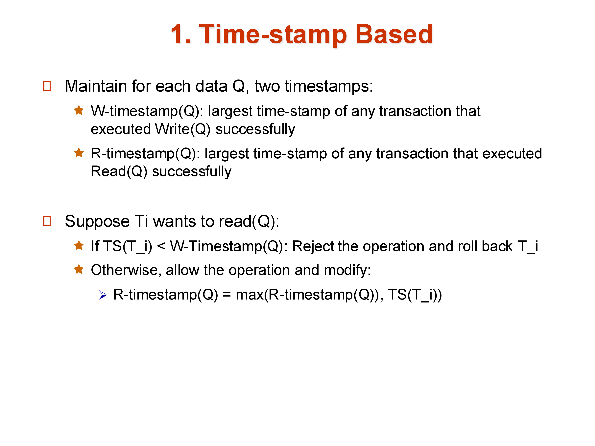
Read rule: when transaction \(T_i\) wants to read \(Q\): - If \(TS(T_i) < W\text{-timestamp}(Q)\): a later transaction has already written \(Q\). In the intended order, \(T_i\) comes first, which means \(T_i\) should be reading a value that predates the later write — but that value is gone. The only option is to abort and restart \(T_i\) with a new, larger timestamp. - Otherwise: allow the read and set \(R\text{-timestamp}(Q) = \max(R\text{-timestamp}(Q),\ TS(T_i))\).
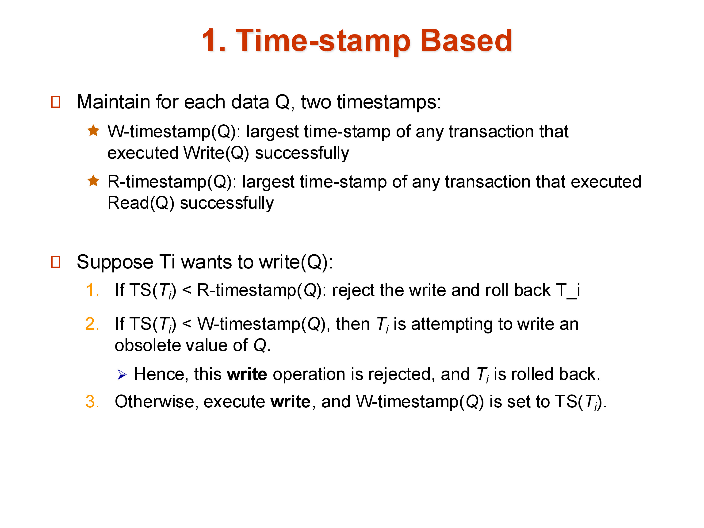
Write rule: when transaction \(T_i\) wants to write \(Q\): - If \(TS(T_i) < R\text{-timestamp}(Q)\): a later transaction has already read \(Q\). Allowing \(T_i\) to write would retroactively change what that later transaction read — a contradiction. Abort and restart \(T_i\). - If \(TS(T_i) < W\text{-timestamp}(Q)\): a later transaction has already written \(Q\). \(T_i\)’s write is stale — it would overwrite a more recent value. Abort and restart \(T_i\) (or in some implementations, simply skip the write, since the more recent value supersedes it anyway). - Otherwise: execute the write and set \(W\text{-timestamp}(Q) = TS(T_i)\).
2.1 Properties and Limitations
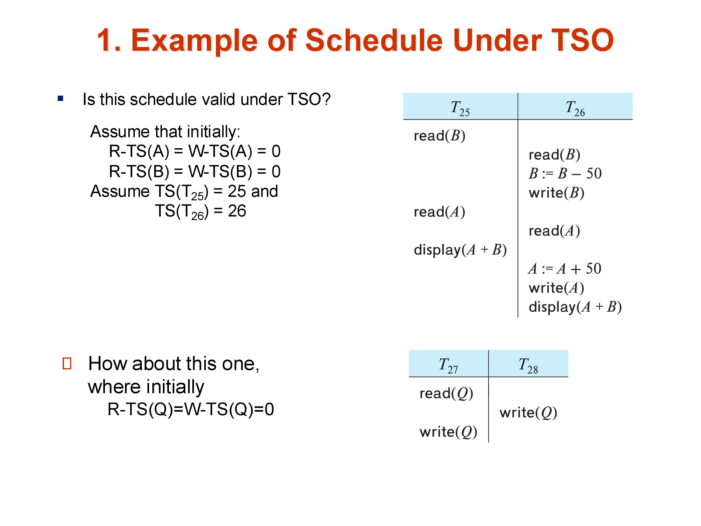
Timestamp ordering is optimistic in spirit — it allows transactions to proceed without locks and only aborts them when a conflict is detected. It guarantees serializability: the equivalent serial order is precisely the timestamp order. A schedule that passes all read and write checks corresponds to an execution that could have arisen if the transactions had run one at a time in timestamp order.
One important property: timestamp ordering allows some schedules that 2PL would reject. If \(T_{25}\) reads \(B\) and then \(T_{26}\) reads \(B\) and writes a new value, \(T_{25}\) is unaffected — its read happened before the write, so there is no conflict. Under 2PL, \(T_{25}\) might have been forced to hold a shared lock on \(B\) while waiting for another operation, blocking \(T_{26}\) unnecessarily.
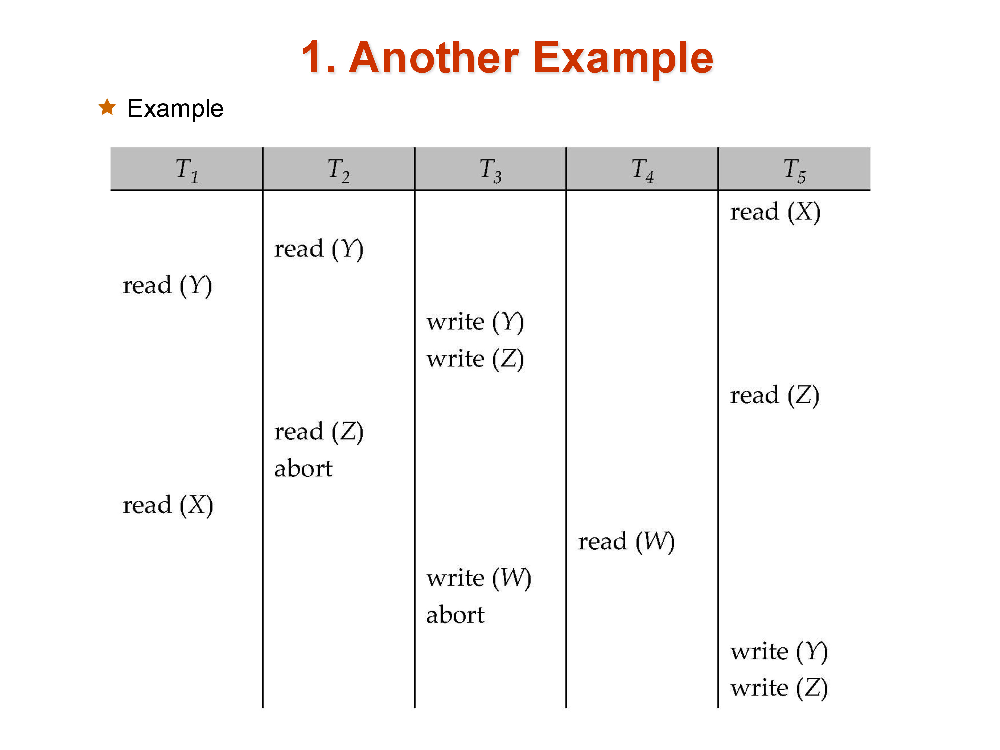
A weakness of this scheme is that timestamps are assigned at entry time, which is often much earlier than when the transaction actually accesses an item. A transaction that enters early but runs slowly may find that many items have been written by later-arriving transactions by the time it tries to read them, causing repeated aborts. This pessimism motivates the optimistic scheme below.
3. Optimistic Concurrency Control
Optimistic concurrency control (OCC) takes the opposite extreme: let a transaction execute completely without checking for conflicts, and only validate at commit time. The name reflects the optimism that conflicts are rare — in low-contention workloads, most transactions will pass validation and commit on the first try.
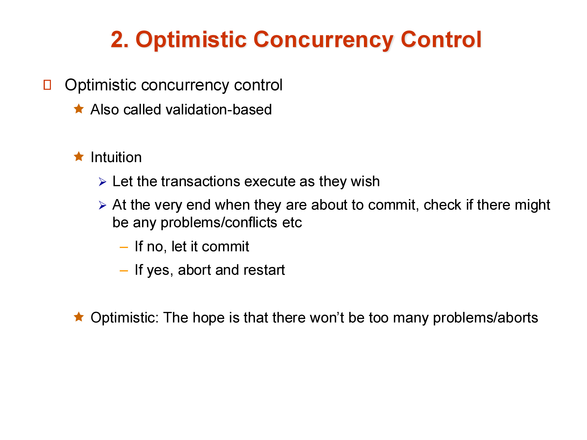
Each transaction proceeds through three phases:
Read phase: the transaction executes normally, reading from the shared database and writing to a private local copy. All writes during this phase are invisible to other transactions. The transaction accumulates a read set (all items it read) and a write set (all items it wrote).
Validation phase: the transaction checks whether its execution is consistent with serializability. The moment it enters this phase is its validation timestamp — the timestamp that determines its position in the serialization order.
Write phase: if validation succeeds, the transaction’s private writes are made public (committed to the shared database). If validation fails, the transaction aborts and restarts.
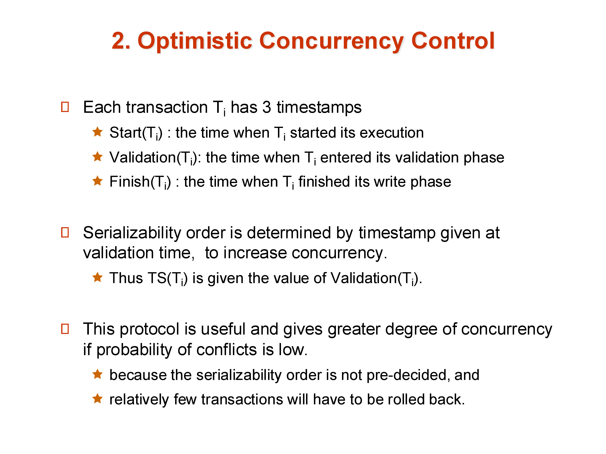
Each transaction has three timestamps: \(\text{start}(T)\) (when it began reading), \(\text{validation}(T)\) (when it entered the validation phase), and \(\text{finish}(T)\) (when it completed writing to the shared database). The serialization order is determined by validation timestamps: if \(\text{validation}(T_i) < \text{validation}(T_j)\), then \(T_i\) appears before \(T_j\) in the equivalent serial schedule.
3.1 The Validation Check
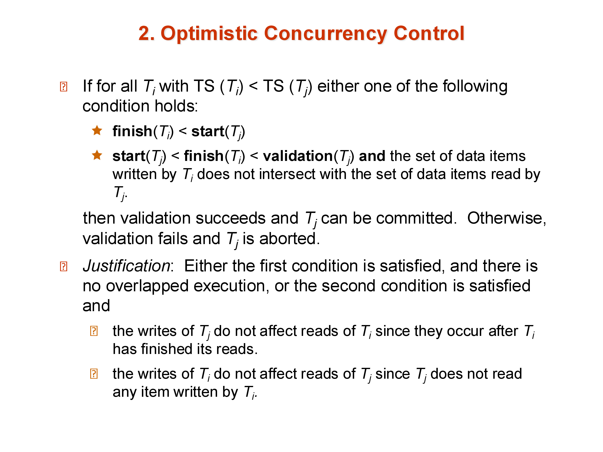
For transaction \(T_j\) to pass validation, for every earlier transaction \(T_i\) (with \(\text{validation}(T_i) < \text{validation}(T_j)\)), one of the following must hold:
\(T_i\) finished before \(T_j\) started: \(\text{finish}(T_i) < \text{start}(T_j)\). There is no overlap at all. \(T_j\) could only have read values that \(T_i\) had already committed. No conflict is possible.
\(T_i\) finished before \(T_j\) entered validation, and their write and read sets are disjoint: \(\text{start}(T_j) \leq \text{finish}(T_i) < \text{validation}(T_j)\), and \(\text{WriteSet}(T_i) \cap \text{ReadSet}(T_j) = \emptyset\). Their executions overlapped, so \(T_j\) might have read items that \(T_i\) was writing — but since \(T_i\)’s write set and \(T_j\)’s read set do not intersect, this did not happen. No conflict.
If neither condition holds for some \(T_i\), then \(T_j\) may have read a stale value of an item that \(T_i\) was supposed to write first (in the serial order). \(T_j\) aborts and restarts.
The key insight: because all writes during the read phase go to private storage, \(T_j\)’s reads are never contaminated by \(T_i\)’s uncommitted writes. The validation phase checks whether the values \(T_j\) read would have been correct if the transactions had actually run in timestamp order.
3.2 When OCC Shines and Where It Fails
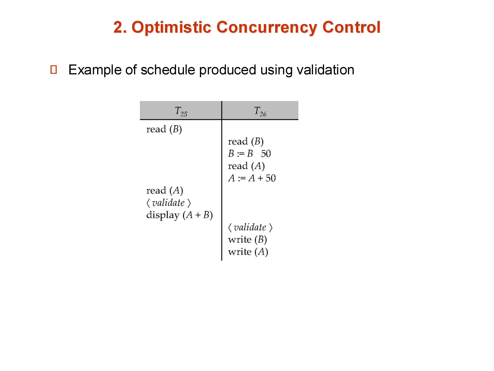
OCC works best in low-contention workloads: many short transactions accessing largely disjoint data. In such workloads, validation almost never fails, no locks are ever acquired, and throughput is very high. Read-only transactions are particularly favored: they have empty write sets, so their validation is trivially satisfied if no transaction they care about has modified their read set.
OCC performs poorly under high contention. If many transactions compete for the same items, validation failures are frequent, wasted work accumulates, and the system may spend more time restarting transactions than committing them. In those scenarios, locking — which avoids the wasted work by blocking early — is more efficient.
A subtler limitation: even a read-only transaction must enter the validation phase under OCC. It must confirm that the items it read were not overwritten by a concurrent transaction that committed before it. In principle, a read-only transaction is never wrong — it observes a consistent snapshot from some past moment — but OCC cannot exploit this without tracking versions. This limitation motivates snapshot isolation.
4. Snapshot Isolation
Snapshot isolation (SI) is the dominant concurrency control scheme in modern databases. PostgreSQL, Oracle, MySQL InnoDB, and virtually every other major database system use some form of it.
The central idea: every transaction reads data from a consistent snapshot taken at the moment the transaction started. For any item \(Q\), the transaction always reads the version of \(Q\) that was current as of its start time — regardless of what other transactions have written to \(Q\) since then.
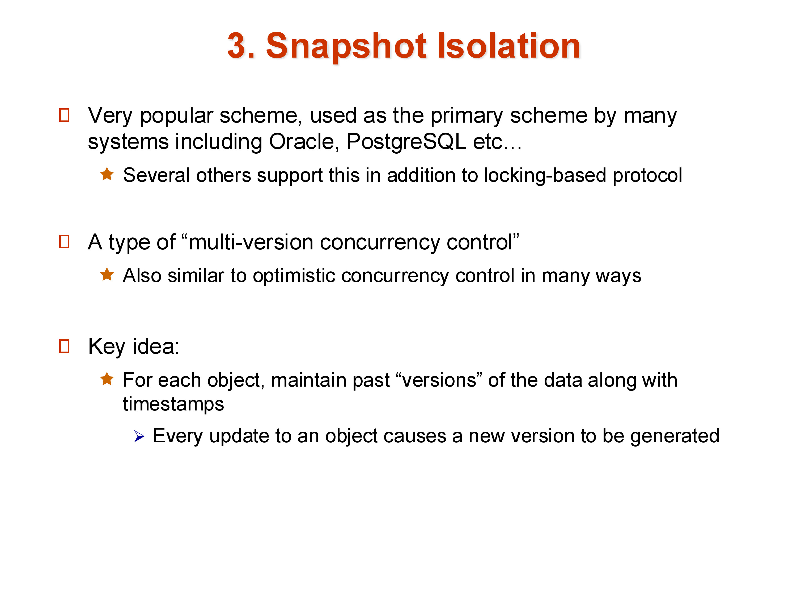
To support this, the database maintains multiple versions of each data item. When a transaction writes item \(Q\), it does not overwrite the current value in place; instead, it creates a new version labeled with the writing transaction’s timestamp. Older versions are retained until no active transaction needs them anymore. This is the “multi-version” in multiversion concurrency control (MVCC).
4.1 How Reads Work
A read transaction that starts at time \(t\) always reads the most recent version of \(Q\) whose timestamp is \(\leq t\) — that is, the latest version that existed when the transaction started. Concurrent writes by other transactions, which create versions with timestamps \(> t\), are invisible to this transaction.
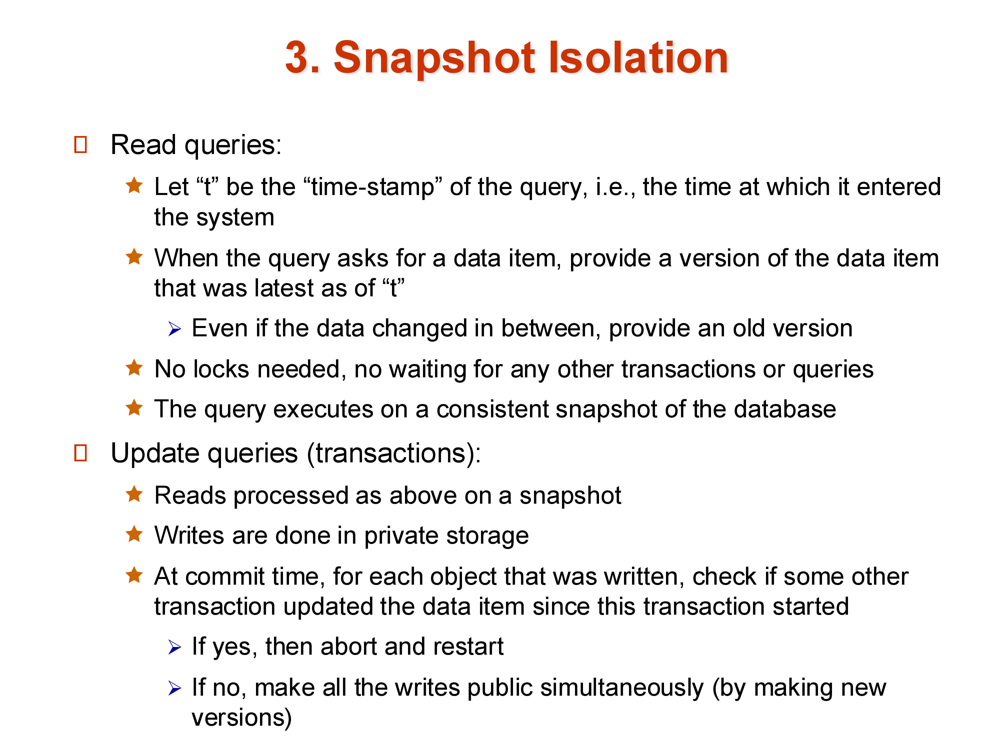
The result: read-only transactions never block, never abort, and never interfere with write transactions. A read transaction that runs for an hour still reads a perfectly consistent snapshot from when it started. Other transactions may be modifying data throughout that hour, but the reader is unaffected. This is a profound advantage over locking, where a long-running read would have to hold shared locks for its entire duration, blocking writers.
The tradeoff: the snapshot may be stale. If a read transaction started an hour ago and the data has changed substantially since, its results reflect the database as it was an hour ago, not as it is now. From a database correctness perspective this is fine — the result is consistent with the state of the database at the start timestamp. From a user perspective, it may occasionally surprise users who expect the very latest data.
4.2 How Writes Work: First-Committer-Wins
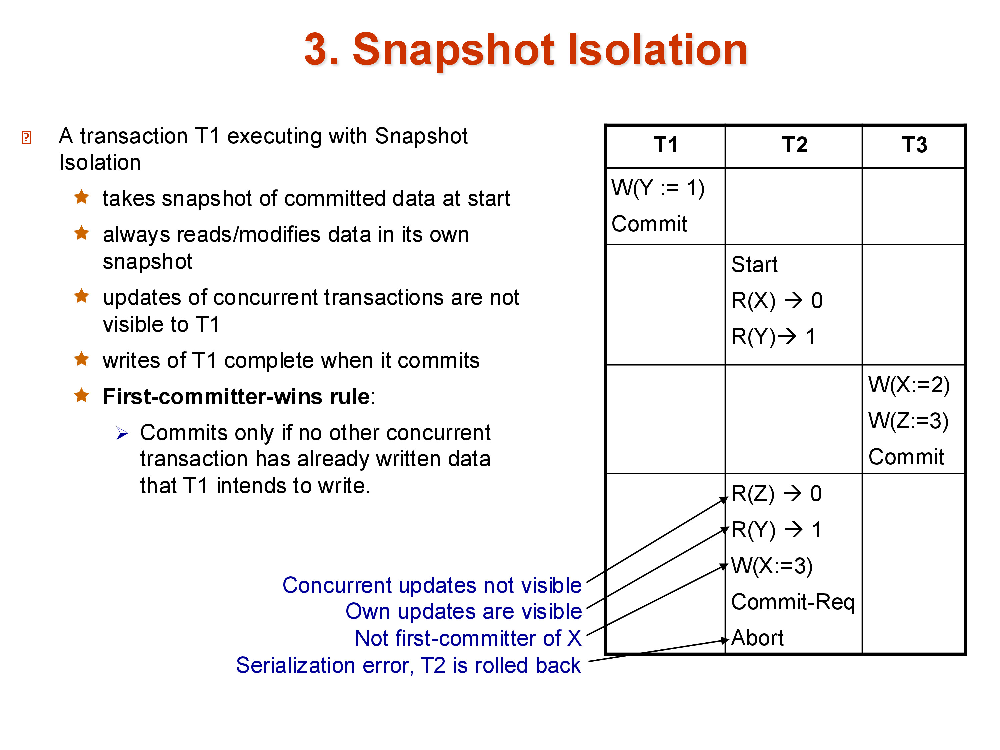
Writes are more subtle. During execution, all writes go to private storage — they are not visible to other transactions until commit. At commit time, the transaction goes through a validation check called first-committer-wins:
For every item \(Q\) in the transaction’s write set, check whether any concurrent transaction (one that started after this transaction’s start time and committed before this transaction’s commit time) has also written \(Q\). If yes, this transaction aborts — it has lost the race to update \(Q\). If no concurrent transaction has written any item in the write set, the transaction commits and its writes become public.
The rule is conservative: it only checks write sets, not read sets. This keeps the check efficient, since write sets tend to be small. As we will see, this conservatism allows a class of anomalies that true serializability would prevent.
4.3 Example
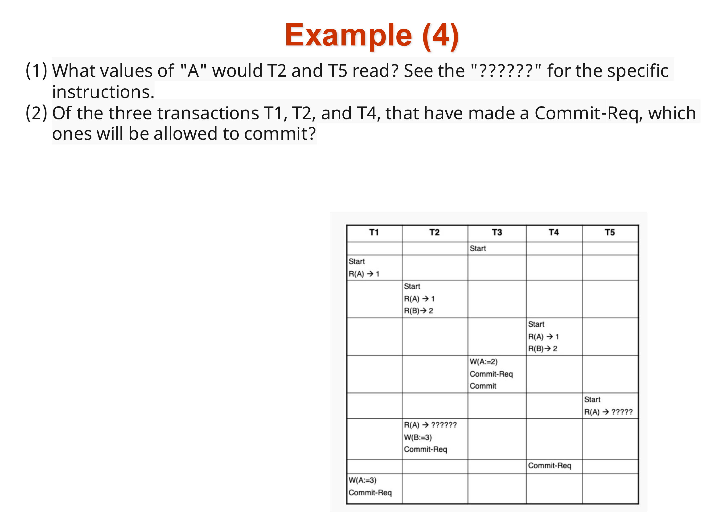
A useful exercise: given a set of concurrent transactions with known start, commit, and read/write operations, determine what values each transaction reads and which transactions successfully commit. The rules:
- Reading: a transaction reads the version of each item that was current as of its start time, regardless of later writes.
- Committing: a write transaction commits only if no concurrent committed transaction has written any of the same items (first-committer-wins). Read-only transactions always commit — they have no write set to check.
5. The Write Skew Problem
Snapshot isolation is not serializable. The most well-known anomaly it allows is write skew.
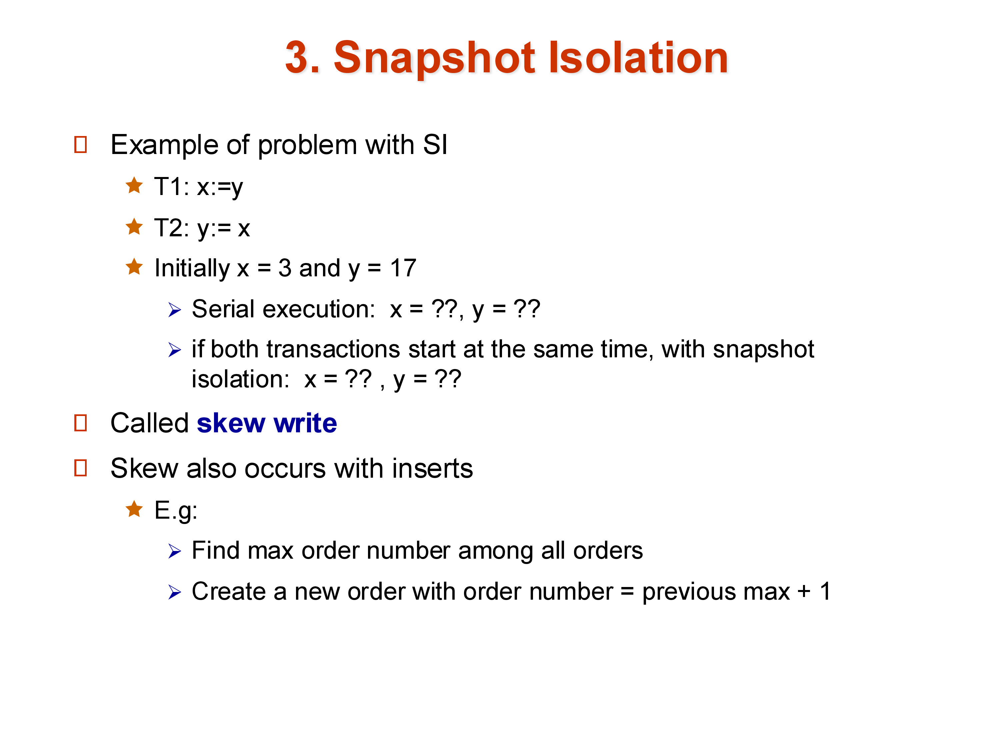
Consider two items \(x\) and \(y\) with initial values \(x = 10\), \(y = 20\). Two transactions run concurrently: - \(T_1\): reads \(x\) (gets 10), reads \(y\) (gets 20), writes \(x := 20\) (setting \(x\) to the value of \(y\)) - \(T_2\): reads \(x\) (gets 10), reads \(y\) (gets 20), writes \(y := 10\) (setting \(y\) to the value of \(x\))
Both transactions start from the same snapshot. \(T_1\)’s write set is \(\{x\}\), \(T_2\)’s write set is \(\{y\}\). The write sets are disjoint, so the first-committer-wins rule raises no objection — both transactions commit.
Final state: \(x = 20\), \(y = 10\). But the intention of each transaction was to make both values equal (set one to the other’s value). In any serial execution: - \(T_1\) before \(T_2\): both values become 20 - \(T_2\) before \(T_1\): both values become 10
Neither serial execution produces the outcome \((x=20, y=10)\). The concurrent execution produced a result that is not equivalent to any serial schedule. The anomaly arose because each transaction read an item (\(y\) and \(x\) respectively) that the other wrote — a read-write conflict that the write-set-only check misses.
The fix is known: also check read sets at commit time (abort if any concurrent committed transaction wrote an item in the transaction’s read set). But read sets are large — analytical queries may read millions of rows — making this check expensive. Most production implementations of snapshot isolation omit the read-set check and accept the possibility of write skew.
A second example of write skew: two transactions simultaneously find the current maximum order number and each inserts a new order with that number plus one. Since each inserts a new row, their write sets do not intersect (each writes a different, newly created tuple), so both commit — and both use the same order number.
5.1 Snapshot Isolation in Oracle and PostgreSQL
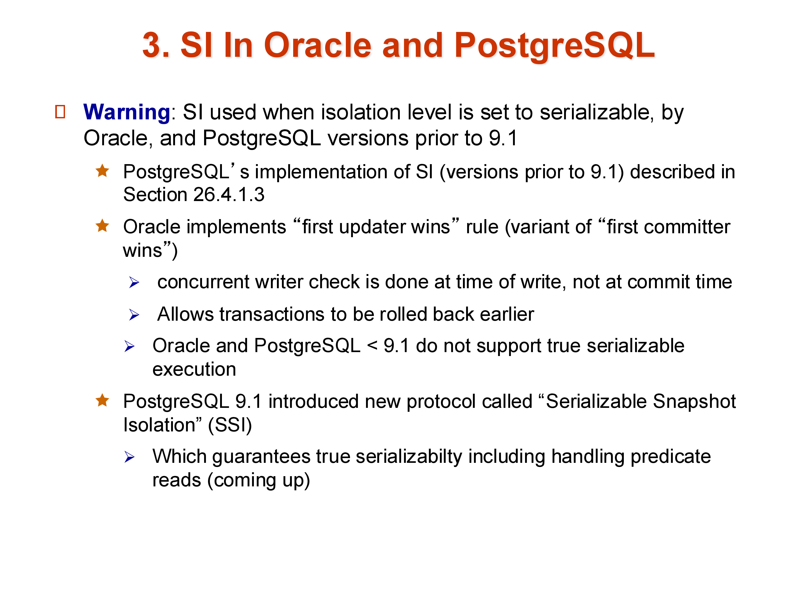
Oracle has used snapshot isolation as its primary concurrency control mechanism for decades, labeling it “serializable” despite its known susceptibility to write skew. PostgreSQL used the same approach until version 9.1, when an academic research project introduced Serializable Snapshot Isolation (SSI) — a variant that tracks read-write dependencies and aborts transactions that would produce non-serializable results. SSI adds overhead compared to basic SI but provides true serializability. It is available in PostgreSQL as the SERIALIZABLE isolation level but is not the default; READ COMMITTED is the default, as discussed below.
6. Anomalies and Isolation Levels
The SQL standard acknowledges that full serializability is expensive and that many applications can tolerate weaker guarantees. It defines a hierarchy of isolation levels, each protecting against a specific set of anomalies. Understanding the anomalies clarifies what each level actually guarantees.
6.1 Dirty Read
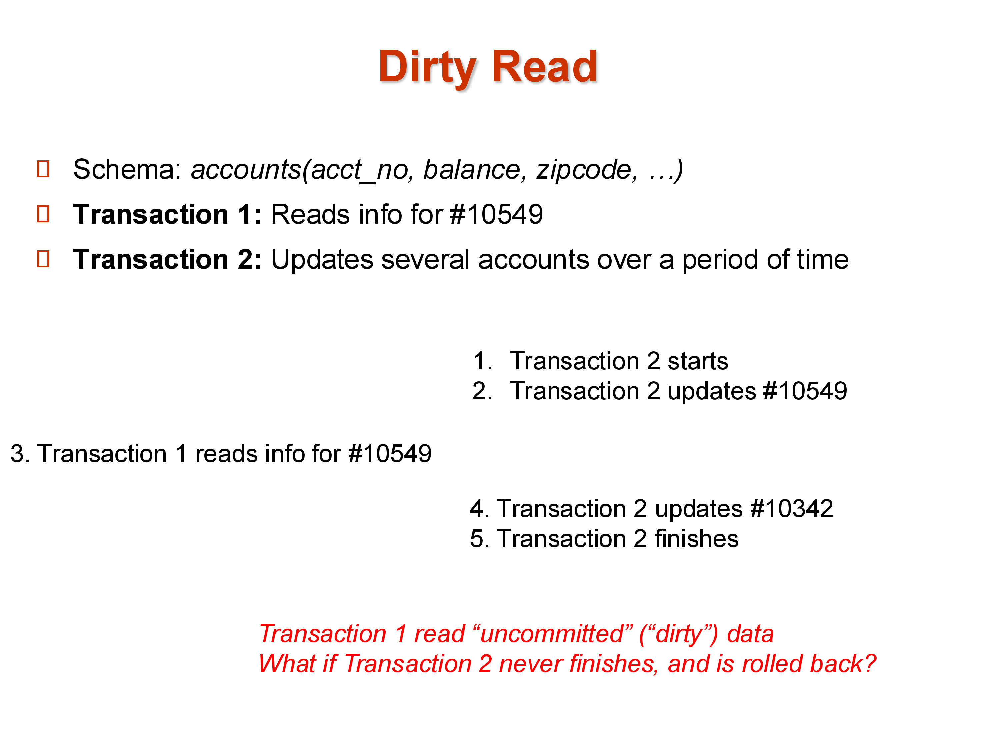
A dirty read occurs when a transaction reads a value written by another transaction that has not yet committed. If the writing transaction later aborts, the reader has observed data that never officially existed. This is the cascading abort problem from the previous notes expressed as a read anomaly. Under strict 2PL and snapshot isolation, dirty reads cannot occur. Under weaker schemes, they can.
6.2 Non-Repeatable Read
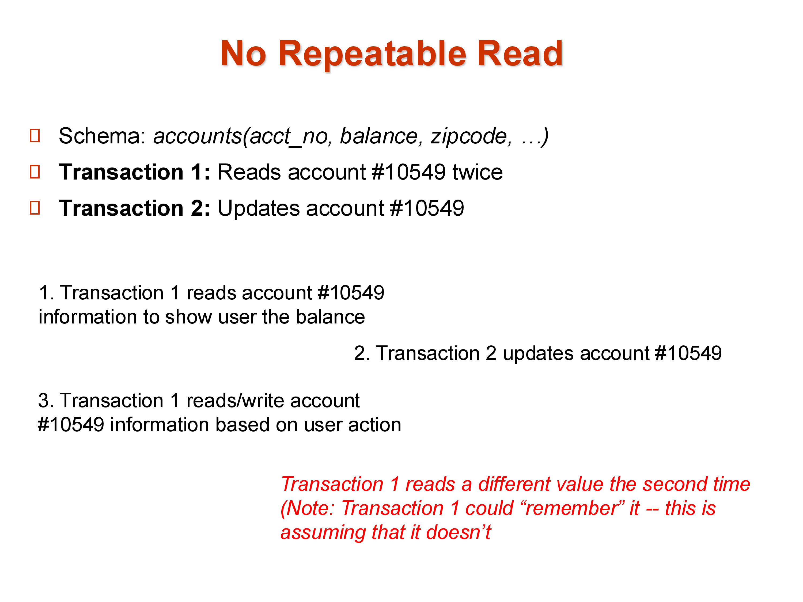
A non-repeatable read occurs when a transaction reads the same item twice and gets different values, because another transaction modified and committed the item between the two reads. Example: \(T_1\) reads account balance (gets $100), \(T_2\) withdraws $30 and commits, \(T_1\) reads the balance again (gets $70). Within a single transaction, the same item returned different values. Under snapshot isolation, this cannot happen — the transaction always reads from its snapshot. Under weaker schemes, it can.
6.3 Phantom Reads
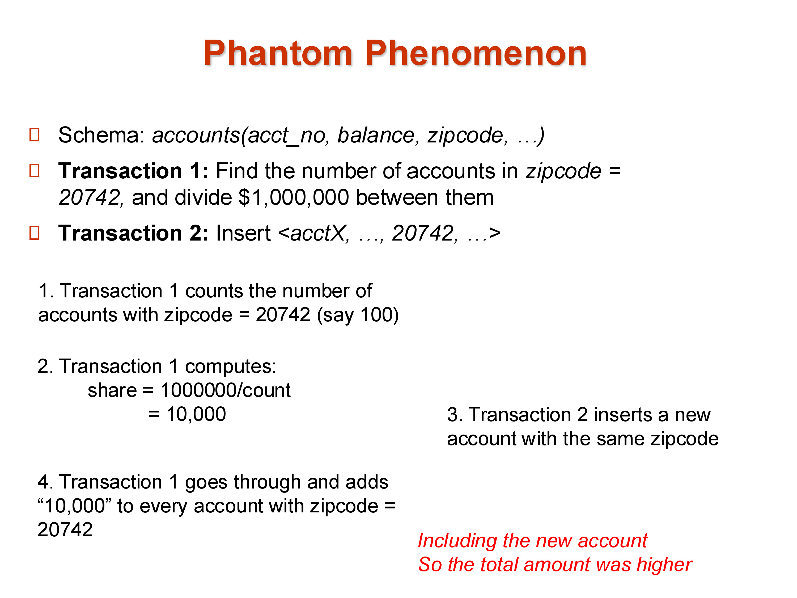
The phantom phenomenon is subtler. A transaction executes a query that returns a set of rows. A concurrent transaction inserts or deletes rows matching the same predicate and commits. If the first transaction re-executes the same query, it gets a different set — new rows have appeared (phantoms) or existing rows have vanished.
A concrete example: \(T_1\) counts the number of accounts in zip code 20742 (gets 100) and divides a $1,000,000 prize evenly among them ($10,000 each). While \(T_1\) is distributing the money, \(T_2\) inserts a new account in zip code 20742 and commits. \(T_1\), processing accounts one by one, encounters the new account and adds $10,000 to it — distributing $1,010,000 instead of $1,000,000.
The phantom is the new tuple: it was not part of the set \(T_1\) counted, but it is part of the set \(T_1\) updates. Standard row-level locking does not protect against phantoms because the phantom row does not exist when \(T_1\) acquires its locks — you cannot lock a row that does not yet exist. Preventing phantoms requires predicate locking (locking the condition, not just specific rows) or the version-based guarantees of full snapshot isolation. This is one of the primary reasons why achieving true serializability is hard in practice.
6.4 The SQL Isolation Level Hierarchy
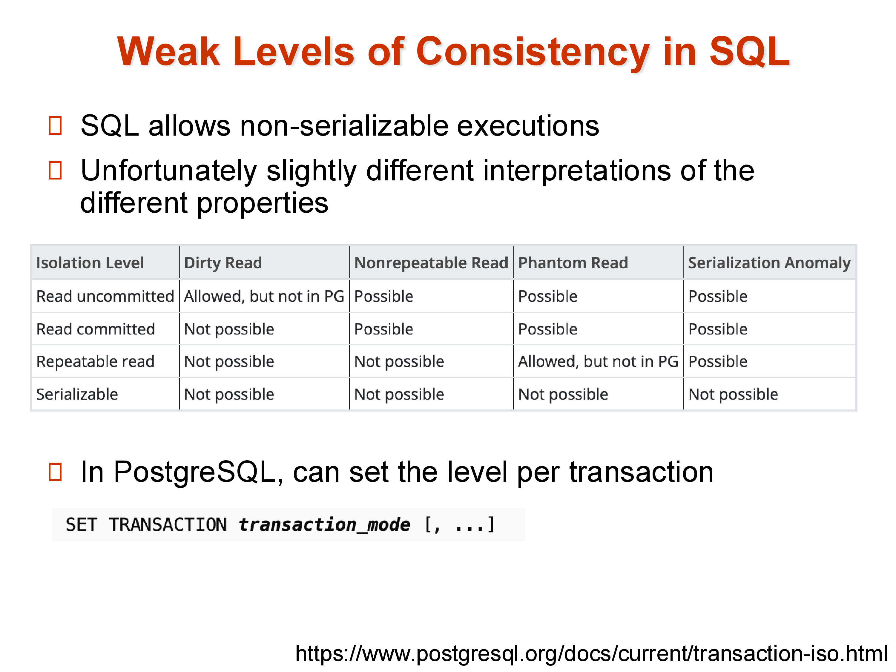
The SQL standard defines four isolation levels in increasing order of strength:
| Isolation Level | Dirty Read | Non-Repeatable Read | Phantom |
|---|---|---|---|
READ UNCOMMITTED |
Possible | Possible | Possible |
READ COMMITTED |
Prevented | Possible | Possible |
REPEATABLE READ |
Prevented | Prevented | Possible |
SERIALIZABLE |
Prevented | Prevented | Prevented |
In PostgreSQL, the isolation level is set per transaction:
SET TRANSACTION ISOLATION LEVEL SERIALIZABLE;
SET TRANSACTION ISOLATION LEVEL REPEATABLE READ;
SET TRANSACTION ISOLATION LEVEL READ COMMITTED;
SET TRANSACTION ISOLATION LEVEL READ UNCOMMITTED;READ COMMITTED is the default in PostgreSQL and many other databases. Under this level, a transaction reads the latest committed version of each item at the time of each individual read — not a snapshot from the transaction’s start. This prevents dirty reads but allows non-repeatable reads: two reads of the same item within one transaction may return different values if another transaction committed in between.
REPEATABLE READ prevents non-repeatable reads by ensuring that repeated reads of the same item within a transaction return the same value. It does not prevent phantoms — new rows matching a predicate may appear between two executions of the same query.
SERIALIZABLE prevents all three anomalies. In PostgreSQL since version 9.1, this uses Serializable Snapshot Isolation. In many other databases, “serializable” is actually snapshot isolation, which prevents dirty reads and non-repeatable reads but not write skew (and thus not all phantoms). The mislabeling has been a source of confusion and subtle bugs in production systems for decades.
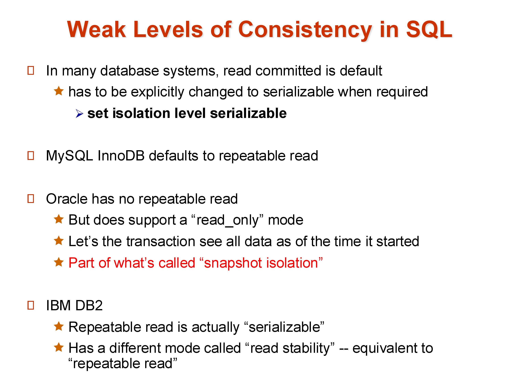
In practice: - PostgreSQL: defaults to READ COMMITTED; true serializable (SSI) available since 9.1 but not the default. - MySQL InnoDB: defaults to REPEATABLE READ, using snapshot isolation to achieve it. - Oracle: offers READ COMMITTED and a labeled-serializable (actually snapshot isolation); no true REPEATABLE READ. - IBM DB2: has READ STABILITY, which is similar to but not identical to REPEATABLE READ.
The appropriate choice depends on the application. Financial applications often require SERIALIZABLE. Web applications serving read-heavy workloads can typically tolerate READ COMMITTED. The key is to understand what anomalies are possible at each level and decide deliberately whether the application logic can tolerate them — rather than accepting the default without thought.
7. Summary
Three concurrency control schemes that avoid the read-write conflicts inherent in locking:
Timestamp ordering: assign each transaction an entry timestamp; abort and restart any transaction whose read or write would violate the timestamp-based serial order. Simple to understand and guarantees serializability, but prone to excessive aborts when transactions arrive early and run slowly.
Optimistic concurrency control (OCC): execute transactions freely, accumulating read and write sets in private storage, then validate at commit time. Validation succeeds if no concurrent earlier-ordered transaction wrote an item this transaction read. Excellent for low-contention workloads; degrades under high contention.
Snapshot isolation: every transaction reads from a consistent snapshot taken at its start time; reads never block; writes go to private storage and commit via first-committer-wins (write-set check only). Read-only transactions always succeed. Susceptible to write skew because read sets are not checked. The dominant scheme in production databases today.
The SQL standard formalizes three anomalies — dirty read, non-repeatable read, and phantom — and defines four isolation levels offering progressively stronger protection. Most production databases default to READ COMMITTED, which prevents dirty reads but allows the others. True serializability — preventing all three — is available but carries a performance cost that many applications choose to avoid by understanding and accepting the risks of the weaker levels.